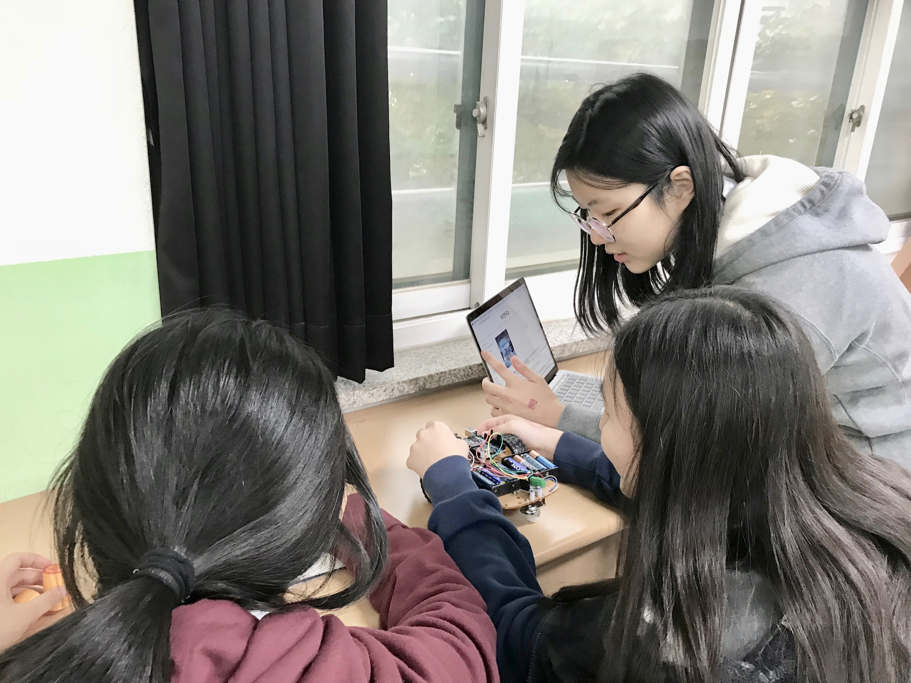
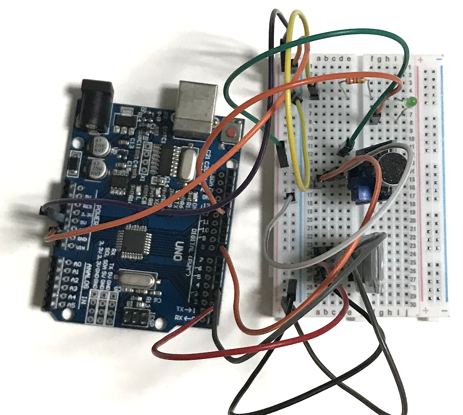
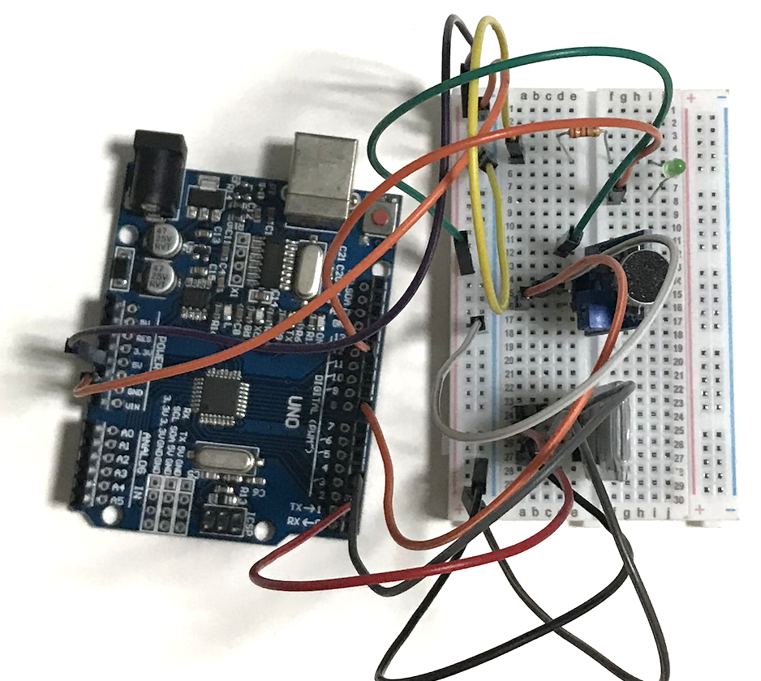

New Technology laboratory
NT연구소는 'New Technology'의 준말로,4차 산업혁명에 관심있는 학생들이 모여
New Technology(3D printer, coding, Iot….)에 대해 배우고 실습해보는 정규 동아리입니다.
-엔트리,앱인벤터,아두이노,캐드 등을 이용
-3D printer 자율 사용 가능
-연말 팀 또는 개인 자유주제로 제작활동 및 발표
설립일 : 2017. 9. 1
장소 : 과학실
담당선생님: 김은선 선생님(제 1교무실)
부장: 3-8 전하은
부원: 권수연, 권지희, 김동현, 김민서, 김수린, 김진엽, 박준혁, 신지우, 이범수, 이윤서, 장은지, 조환희, 현서희 (총 14명)

 
